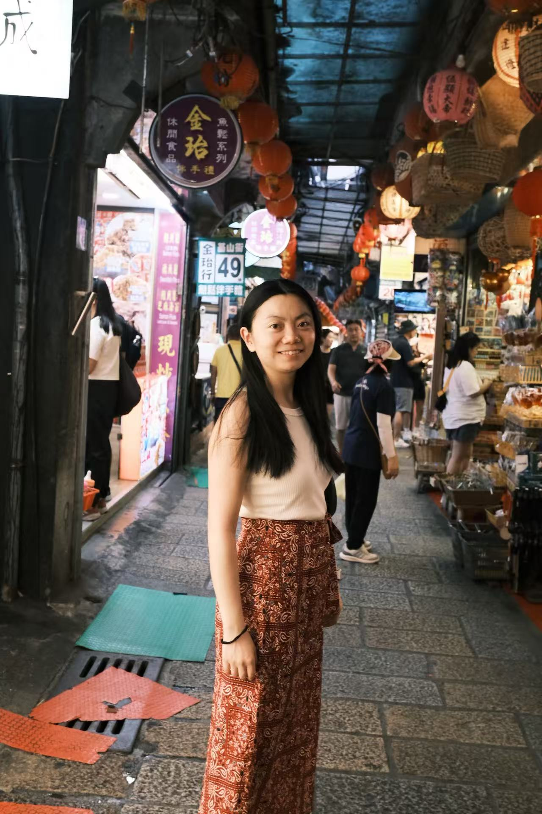

Xixi Wu 「吴茜茜」
M.S. Student
School of Computer Science, Fudan University
I am looking for Ph.D. opportunies in 24 Fall. Feel free to drop an email to me if you have such chances!
Email / GitHub / Google Scholar
M.S. Student
School of Computer Science, Fudan University
I am looking for Ph.D. opportunies in 24 Fall. Feel free to drop an email to me if you have such chances!
Email / GitHub / Google Scholar

Short Bio
This is Xixi, currently pursuing my M.S. degree at Fudan University under the supervison of Prof. Yun Xiong.
My research interests lie in Graph Data Mining and Recommender Systems. Previously, I completed my B.S. degree on Computer Science from Fudan University in 2021.
Publications
-
 ConsRec: Learning Consensus Behind Interactions for Group Recommendation
ConsRec: Learning Consensus Behind Interactions for Group Recommendation
Xixi Wu, Yun Xiong, Yao Zhang, Yizhu Jiao, Jiawei Zhang, Yangyong Zhu, and Philip S. Yu
Proceedings of the ACM Web Conference (WWW), 2023
-
 CLARE: A Semi-supervised Community Detection Algorithm
CLARE: A Semi-supervised Community Detection Algorithm
Xixi Wu, Yun Xiong, Yao Zhang, Yizhu Jiao, Caihua Shan, Yiheng Sun, Yangyong Zhu, and Philip S. Yu
Proceedings of the 28th ACM SIGKDD Conference on Knowledge Discovery and Data Mining (KDD), 2022
Experience
-

Microsoft
Software Engineer Intern, Outlook Mobile Team Jul. 2020 – Sep. 2020
Selected Awards
- ACM Web Conference Student Travel Grant 2023
- National Scholarship for Postgraduate Students 2022
- Second Class Scholarship for Outstanding Students, Fudan University 2018&2021
- Second Prize of Shanghai Open Data Innovation Research Competition (Top 10 team) 2020
- Second Prize of China Undergraduate Mathematical Contest in Modeling (CUMCM) 2019
Misc
- I have a passion for sports, particularly swimming üèä‚Äç‚ôÄÔ∏è and iron training üèãüèª
- In my free time, I also enjoy cooking, with a particular passion for Chinese cuisine

- During my undergraduate studies, I discovered a love for mobile app development (all source codes can be found on my Github):

Lose Weight, a Fluter App

Hulv, a Mini-Program
Chatroom, a Desktop App
- I enjoy exploring the unknown. I strive to move forward on this path of exploring and learning ✨